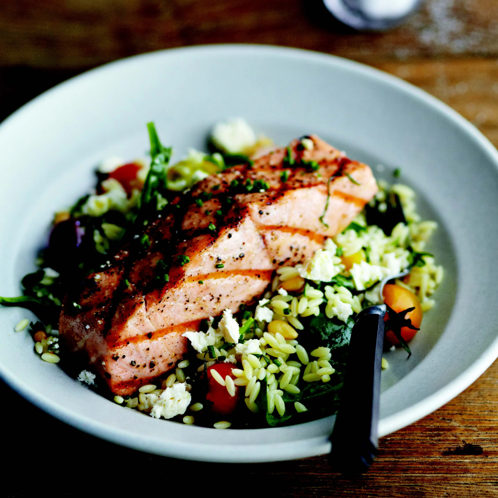

Salmon

Description
Salmon is rich in omega-3 fatty acids, which are known to lower
cholesterol, and it is about as healthy as fish can get. But that is
really a side benefit to this great-tasting main-course salad. It fits
into the Motivating Mondays scenario, but I would happily serve it any day
of the week and for any occasion. The warm orzo salad, with crunchy pine
nuts, fresh basil, tender spinach, and tangy feta, is also good on its
own. The salmon can also be cooked in a ridged grill pan.
Ingredients
Orzo
- 1 1/2 cups orzo
- 3 tablespoons red wine vinegar
- 3 tablespoons finely chopped shallots
- 2 garlic cloves, finely chopped
- 1/3 cup extra-virgin olive oil
- Kosher salt and freshly ground black pepper
- 2 ounces fresh baby spinach (about 3 cups not packed)
- 1 1/2 cups grape tomatoes, cut in half
- 1/2 cup pine nuts, toasted (see Kitchen Note)
- 1/4 cup thinly sliced fresh basil leaves
- 1 cup crumbled feta cheese (4 ounces)
- 2 tablespoons chopped fresh chives, for garnish